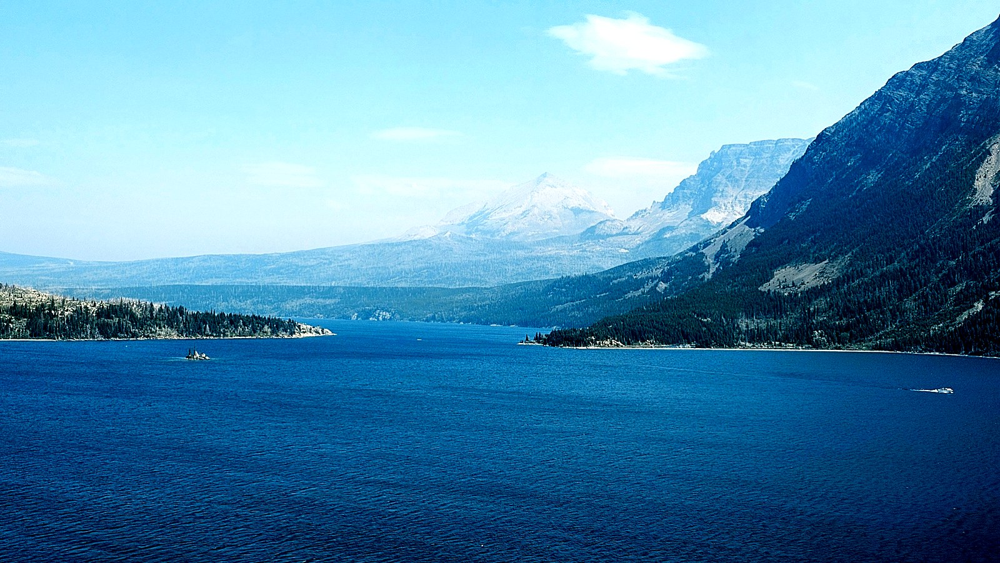
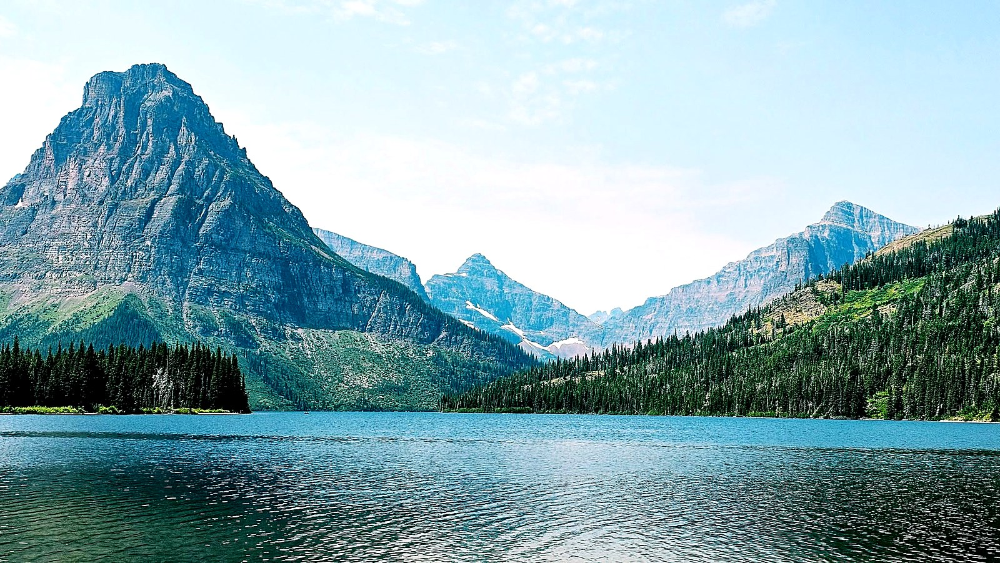
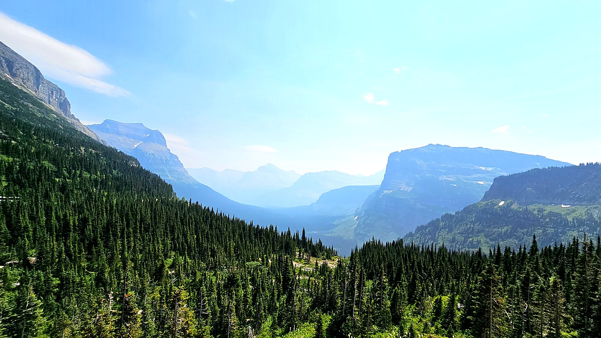
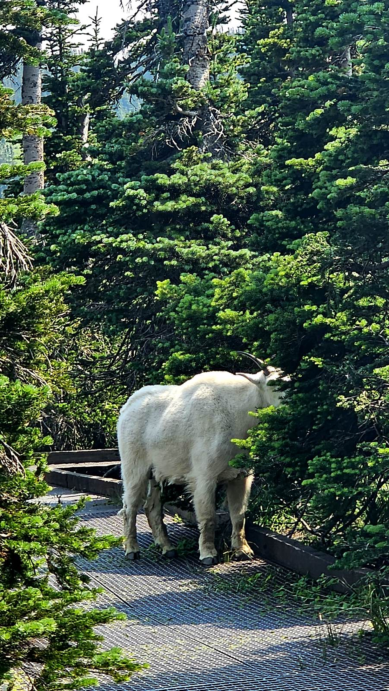
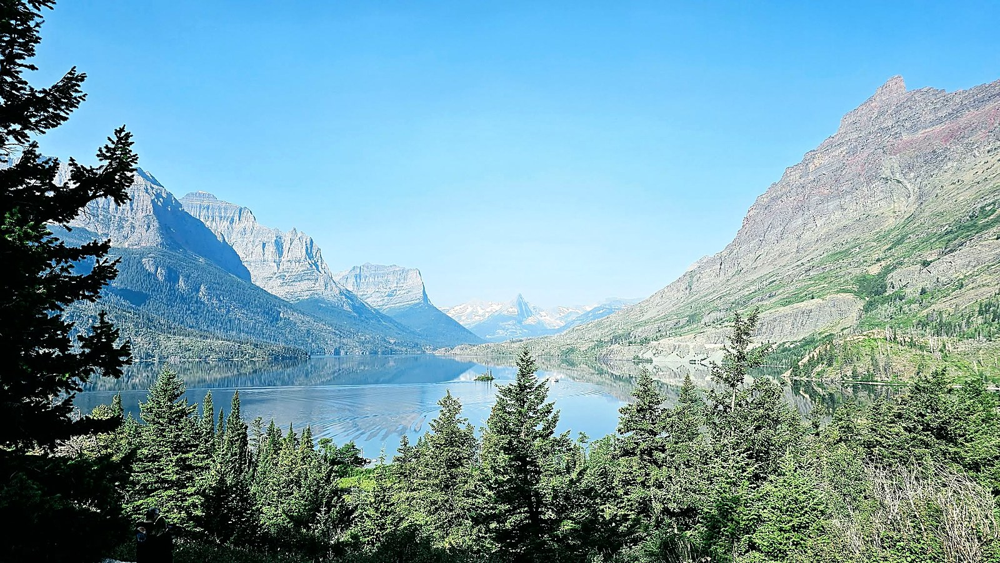

Glacier National Park
Many Glacier keeps a rustic, historic beauty — the old lodges, the lakes sitting flat under the peaks — and it carries the whole way over Going-to-the-Sun Road. What we had not planned for was the smoke. Wildfire haze pushing down from Canada flattened every ridgeline into pale grey layers, and on the worst days the far shore of Lake McDonald simply was not there. It cleared in patches, and those patches were extraordinary.




